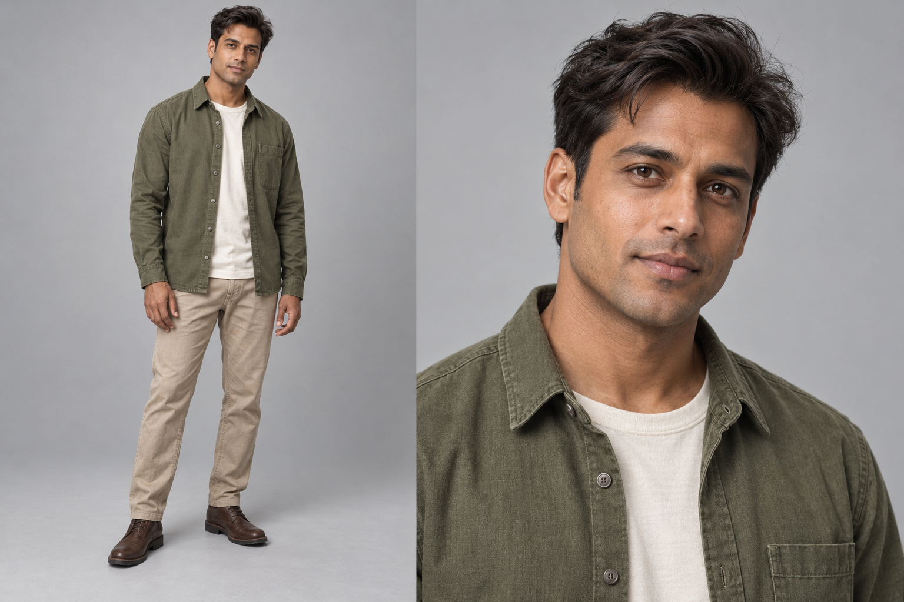
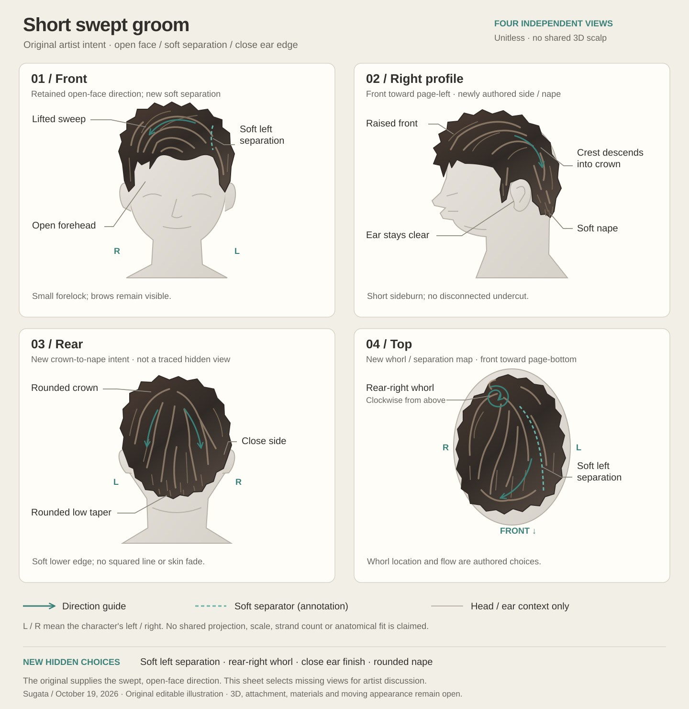

Sugata / original artist source
A complete direction for the short sweep
Four independent drawings select the missing crown, side and nape choices. The retained character's open forehead and relaxed swept crest remain the anchor.


Artist discussion only. A fitted scalp, native groom, materials, rig, morphs, moving appearance and complete character quality remain open.